...It's roots are anchored in the dust and soil and rubble of this world
A seedling with many blossoms
And many more still to bloom
The blossoms grow, bare fruit, and wither-
-turning to dust in their turn
Ashes that spread its memory
Across winds and seas
Until they crystallize into fossils
Waiting to be excavated and remembered
